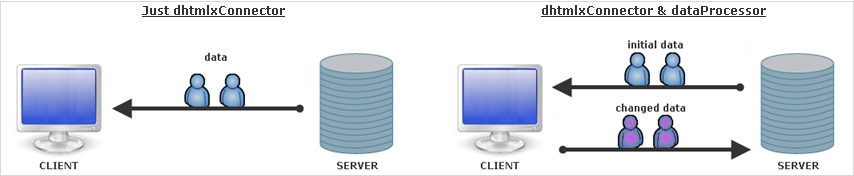

Client-side requirement - dataProcessor
Connector itself lets just pass data from server- to client-side.
When you need to pass data back (e.g. you've updated record and want to save updates in database) you should use dataProcessor additionally.

Shortly, data exchange with dataProcessor can be characterized as follows:
- After you make some changes client sends query with several parameters to server. The parameter we are most interested in is !nativeeditor_status (the parameter name can be changed. Go here for details). It defines the status of operation and can have one of the following values:
- updated
- inserted
- deleted
- Server tries to implement the required query. If the operation was performed successfully, server returns the same status it got. Otherwise - status “error”.
- While exchanging, data is undergone default processing both on server- and client-side, i.e. data will be updated/inserted/deleted automatically (just initialize dataProcessor and dhtmlxConnector), no additional code needs to be added. You can affect on this default processing by means of events (see details below).
Files to include on client-side
If you use the 'dhtmlxSuite' package (dhtmlx.js, dhtmlx.css code files) - you needn't to add any additional files.
But if you use the components standalone you should add one additional file - dataprocessor.js.
Beware, dataprocessor.js should be included BEFORE connector.js.
Initialization and linking to connector
To initialize dataProcessor you should write 2 commands:
var dp = new dataProcessor(url) dp.init(mygrid)
To link dataProcessor with connector you should specify connector file as a parameter of the constructor:
dp = new dataProcessor("myconnector.php"); dp.init(mygrid);
Client-side logging
Dataprocessor has its own client-side logger, which can be enabled by including one additional js file - dhtmlxdataprocessor_debug.js
Validation
client-side validation
Dataprocessor allows to validate data before sending to server-side (see details here).
server-side validation
Details of server-side validation also see in the related chapter of this documentation.
Changing default processing
As it was mentioned before, to affect on default data processing either on server- or client-side you should use events (they can be either dataProcessor or dhtmlxConnector events).
changing default data processing on server-side
There are the following ways to affect on server-side processing:
- To use handler functions of dhtmlxConnector events:
- To create data model (OOP style; available from version 1.5)
class EventModel{ function get($request){ return array_of_data(); } function update($action){ //call $action->success(); or $action->invalid(); to mark operation as completed or invalid } function insert($action){ //call $action->success(); or $action->invalid(); to mark operation as completed or invalid } function delete($action){ //call $action->success(); or $action->invalid(); to mark operation as completed or invalid } } $connector = new GridConnector($this->db); $connector->configure("events", "event_id", "start_date, end_date, event_name"); $connector->useModel(new EventModel()); $connector->render();
Any of methods in the model can be skipped, in such case the connector will try to generate its own version of logic.
Methods update(), insert(), delete() take the DataAction object as a parameter (the same as the beforeProcessing event do).
Method get() takes the request object and must return array of hash (the same as the render_array method do).
You can also combine 2 variants and use data model and events at the same time. The handlers will be invoked in the following order:
- 'before' events (beforeProcessing,…);
- data model;
- 'after' events (afterUpdate,…).
changing default data processing on client-side
Changing default data processing on client-side can be done in one of the following ways:
- On server-side through handler functions of dhtmlxConnector events:
- On client-side through handler functions of dataProcessor events:
- On client-side through dataProcessor's method defineAction().
The method allows to define handler function of the specified status.
dp.defineAction("update",function(sid,response){ ... return true;// return false to cancel default data processing at all })
- meanwhile, you can change status of server-side response through dhtmlxConnector's method set_status() and assign the appropriate processing through defineAction().
Status can be changed in 2 ways:- by setting other predefined status ('updated', 'inserted', 'deleted'). In this case you just change default processing, write some additions to it.
- by setting custom status on server-side. In this case you cancel default processing at all and should define all actions on client-side by yourself.
$data->set_status("my_status");
For more details see chapter 'Custom status'
Renaming the query status parameter
Starting from version 1.5 you get the possibility to rename the query status parameter named by default as !nativeeditor_status.
When can you use it?
The most obvious example - the case when you want to use dhtmlxConnector+dataProcessor with the CodeIgniter framework.
Here you face the following problem - dataProcessor protocol is incompatible with the framework cause the framework blocks the default name of the parameter. The problem can be fixed by renaming the parameter on both server and client sides:
Client side:
var dp = new dataProcessor(./data); dp.action_param = "dhx_editor_status";
Server side:
DataProcessor::$action_param ="dhx_editor_status";